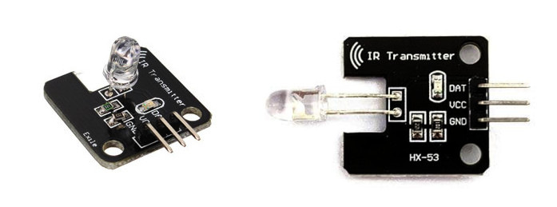
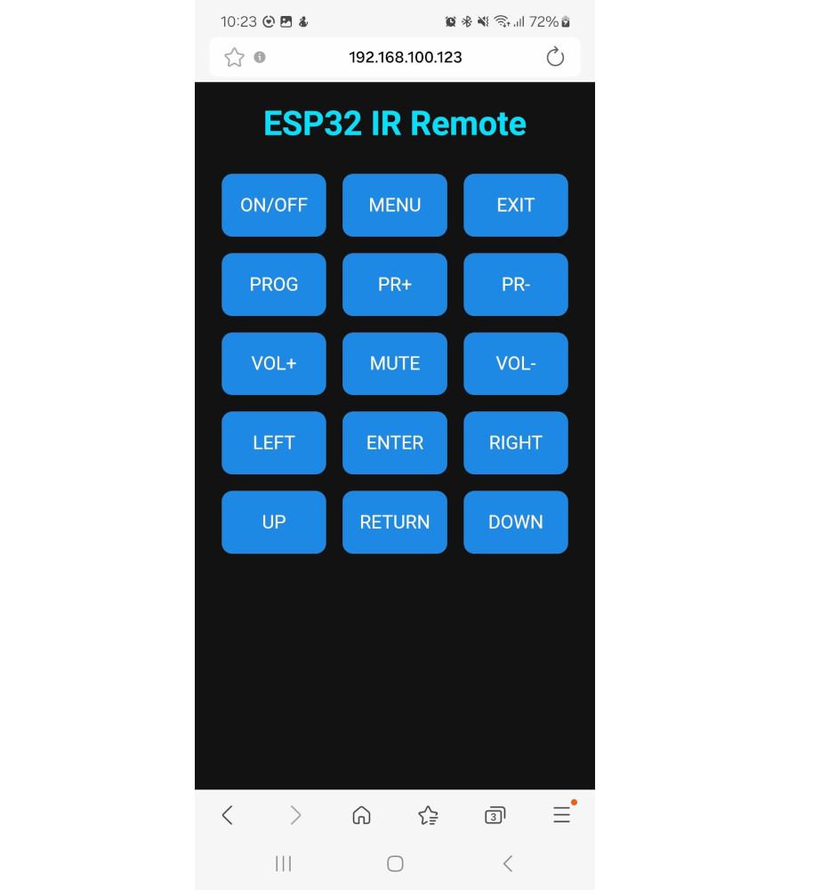

DIY ESP32-Based IR Remote Web Server#
Keywords: ESP32, Arduino-ESP32 Programming, IR Remote for LCD TV
▷ Project Motivation#
I own an old LCD TV (Skyworth 24E510) and I have used it for many years, but its remote control no longer functions properly and needs repair or replacement. To address this, I decided to design and build a DIY ESP32-based IR remote control with an integrated web server, using an ESP32 board and an infrared transmitter module.
Of course, there are other possible approaches, such as using Home Assistant or ESPHome. However, building the system directly with the ESP32 is an excellent choice for learning and experimenting with an IoT-based mini project.
▷ Arduino-ESP32 Programming#
The ESP32 is programmed using the Arduino-ESP32 framework to connect to a local Wi-Fi network and operate as a standalone web server. It hosts a simple web application that provides virtual buttons corresponding to the TV's remote control functions. By connecting my smartphone to the ESP32 web server in the same WiFi network, I can conveniently control the TV through the browser interface.
A low-cost IR transmitter module was used in this project; however, its transmission power is quite limited, resulting in a short operating range. For improved performance, using a high-power IR transmitter module is recommended.

Figure: IR LED transmitter modules used in this project
To implement the IR remote control functions, I used the IRremote library (v4.5.0) and the Arduino-ESP32 core (v3.4.0). These specific versions ensure compatibility and stable operation. Both libraries are available on GitHub:
- Arduino-ESP32 Core: github.com/espressif/arduino-esp32
- IRremote: github.com/Arduino-IRremote/Arduino-IRremote
▷ Arduino Sketch#
Initially, I developed and tested the hardware using a simple Arduino sketch. In this setup, command strings for the IR remote control were received through the Serial interface. When a valid command string was detected, the ESP32 transmitted the corresponding IR signal to the TV.
The initial version of the Arduino code for this project is shown below.
// Date: 2025-10-13
// Board: ESP32 (Arduino-ESP32 v3.4.0+)
// Skyworth TV model 24E510
// Dependencies:
// - IRremote v4.5.0 (https://github.com/Arduino-IRremote/Arduino-IRremote)
//
#include <IRremote.hpp>
#include <map>
#define IR_LED_PIN 4 // GPIO pin connected to the IR LED
IRsend irsend; // IR transmitter object
// Map of commands to NEC 32-bit codes
std::map<String, uint32_t> irMap = {
{"POWER", 0x707030CF},
{"MENU", 0x70708877},
{"VOL+", 0x707028D7},
{"VOL-", 0x7070A857},
{"PR+", 0x707048B7},
{"PR-", 0x7070C837},
{"RETURN", 0x7070DD22},
{"ENTER", 0x7070629D},
{"UP", 0x707042BD},
{"DOWN", 0x7070C23D},
{"LEFT", 0x707022DD},
{"RIGHT", 0x7070A25D},
{"MUTE", 0x7070B04F},
{"CHANLIST", 0x7070CD32},
{"EXIT", 0x7070AD52}
};
void setup() {
Serial.begin(115200); // Initialize Serial
IrSender.begin(IR_LED_PIN); // Initialize IR transmitter
Serial.println("IR Remote Ready. Send a command via Serial.");
}
void loop() {
// Check if a command is received via Serial
if (Serial.available()) {
String cmd = Serial.readStringUntil('\n'); // Read full line
cmd.trim(); // Remove leading/trailing whitespace
cmd.toUpperCase(); // Normalize to uppercase
// Look up the command in the map
auto it = irMap.find(cmd);
if (it != irMap.end()) {
uint32_t code = it->second;
// Print command and code in hexadecimal (8 digits, uppercase)
Serial.printf("Command: %s (Code: 0x%08lX)\n", cmd.c_str(), code);
// Send the 32-bit NEC code (MSB first)
// Parameters: code, number of bits, repeat frames
irsend.sendNECMSB(code, 32, 0);
delay(50); // Short delay to separate signals
// Send NEC repeat code (simulate holding button)
irsend.sendNECRepeat();
} else {
// Command not found
Serial.println("Invalid code!!!");
}
}
}
After confirming that the hardware functioned correctly, I extended the code to include a built-in web server, allowing the IR commands to be sent through a web interface instead of Serial communication.
// Date: 2025-10-26
// Function:
// ESP32 connects to your Wi-Fi AP, starts a web server,
// and sends IR NEC commands when buttons on the web page are pressed.
#include <WiFi.h>
#include <WebServer.h>
#include <IRremote.hpp> // IRremote v4.5.0
// ----------------------- USER CONFIG -----------------------
#define WIFI_SSID "esl-ap"
#define WIFI_PASSWORD "cnch2687"
// GPIO connected to IR LED
#define IR_LED_PIN 4
// Onboard LED pin
#define LED_PIN 22
// -----------------------------------------------------------
IRsend irsend; // IR transmitter object
WebServer server(80); // HTTP server on port 80
// Define IR command mapping (TCL / Skyworth TV)
struct IRCommand {
const char* name;
uint32_t code;
};
IRCommand irCommands[] = {
{"ON/OFF", 0x707030CF},
{"MENU", 0x70708877},
{"EXIT", 0x7070AD52},
//-------------------------
{"PROG", 0x7070CD32},
{"PR+", 0x707048B7},
{"PR-", 0x7070C837},
//-------------------------
{"VOL+", 0x707028D7},
{"MUTE", 0x7070B04F},
{"VOL-", 0x7070A857},
//-------------------------
{"LEFT", 0x707022DD},
{"ENTER", 0x7070629D},
{"RIGHT", 0x7070A25D},
//-------------------------
{"UP", 0x707042BD},
{"RETURN", 0x7070DD22},
{"DOWN", 0x7070C23D}
};
const int NUM_COMMANDS = sizeof(irCommands) / sizeof(irCommands[0]);
// -----------------------------------------------------------
// Send IR command by name
void sendIRCommand(const String& cmd) {
for (int i = 0; i < NUM_COMMANDS; i++) {
if (cmd.equalsIgnoreCase(irCommands[i].name)) {
uint32_t code = irCommands[i].code;
Serial.printf("Sending IR: %s (0x%08lX)\n", cmd.c_str(), code);
irsend.sendNECMSB(code, 32, 0);
delay(50);
irsend.sendNECRepeat();
return;
}
}
Serial.printf("Unknown command received via web: '%s'\n", cmd.c_str());
}
// -----------------------------------------------------------
// HTML Web UI
String buildHTML() {
String html = R"rawliteral(
<!DOCTYPE html>
<html>
<head>
<title>ESP32 IR Remote</title>
<meta name="viewport" content="width=device-width, initial-scale=1">
<style>
body { font-family: Arial; text-align: center;
background: #121212; color: white; }
h1 { color: #00e0ff; }
button {
width: 100px; height: 60px; margin: 8px;
font-size: 18px; border-radius: 10px; border: none;
background: #1e88e5; color: white;
transition: background 0.2s;
}
button:hover { background: #00bcd4; }
.row { margin-top: 10px; }
</style>
</head>
<body>
<h1>ESP32 IR Remote</h1>
)rawliteral";
for (int i = 0; i < NUM_COMMANDS; i++) {
html += "<button onclick=\"sendCmd('"
+ String(irCommands[i].name) + "')\">"
+ irCommands[i].name + "</button>";
if ((i + 1) % 3 == 0) html += "<br>";
}
html += R"rawliteral(
<script>
function sendCmd(cmd) {
const encoded = encodeURIComponent(cmd);
fetch("/ir?cmd=" + encoded)
.then(res => console.log("Sent:", cmd))
.catch(err => console.error(err));
}
</script>
</body></html>
)rawliteral";
return html;
}
// -----------------------------------------------------------
// HTTP request handlers
void handleRoot() {
server.sendHeader("Cache-Control", "no-cache");
server.sendHeader("Content-Type", "text/html; charset=UTF-8");
server.send(200, "text/html", buildHTML());
}
void handleIR() {
if (server.hasArg("cmd")) {
String cmd = server.arg("cmd");
sendIRCommand(cmd);
server.send(200, "text/plain", "OK: " + cmd);
} else {
server.send(400, "text/plain", "Bad Request");
}
}
// -----------------------------------------------------------
void setup() {
Serial.begin(115200);
pinMode(LED_PIN, OUTPUT);
delay(1000);
Serial.println("\nESP32 IR Remote Web Server");
// Start IR transmitter
IrSender.begin(IR_LED_PIN);
// Connect to Wi-Fi
WiFi.begin(WIFI_SSID, WIFI_PASSWORD);
Serial.printf("Connecting to %s", WIFI_SSID);
while (WiFi.status() != WL_CONNECTED) {
digitalWrite(LED_PIN, !digitalRead(LED_PIN));
delay(200);
Serial.print(".");
}
Serial.println("\nWiFi connected!");
Serial.print("IP Address: ");
Serial.println(WiFi.localIP());
digitalWrite(LED_PIN, HIGH);
// Register HTTP routes
server.on("/", handleRoot);
server.on("/ir", handleIR);
server.begin();
Serial.println("HTTP server started...");
}
// -----------------------------------------------------------
void loop() {
server.handleClient();
}
Finally, I tested the web app using both a web browser and an Android-based smartphone. It worked correctly with my TV, allowing me to control it through the ESP32 device.

Figure: Web App GUI
▷ Ideas for Improvement#
This project can be further improved with the following suggestions:
- Use a high-power IR transmitter module to increase the communication range.
- Add a LiPo battery and charging circuit to enable portable, battery-powered operation.
- Implement the ESP32's deep-sleep mode to reduce power consumption. The device can be awakened using a push button when needed.
This work is licensed under a Creative Commons Attribution-ShareAlike 4.0 International License.
Created: 2025-10-26 | Last Updated: 2025-10-27